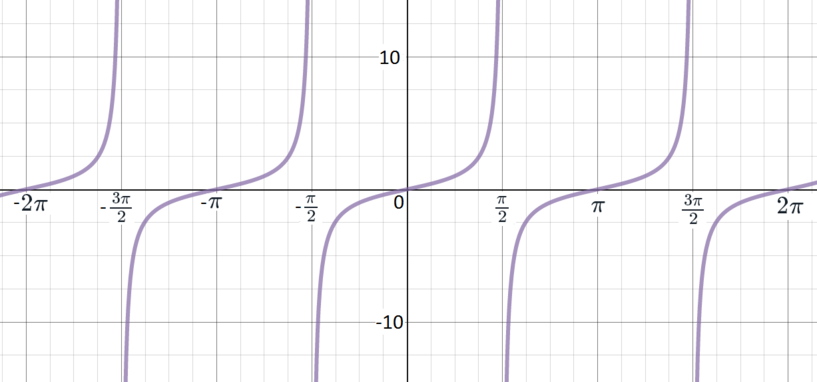

Throughout, A, B and C are the angles of a triangle.
For each of the following, decide whether it is an identity (true for all triangles) or an equation (there is a triangle for which it is not true).
If it is an identity, true for all triangles, then you should prove it (perhaps using trigonometric identities that you already know).
If it is an equation, then at the very least you should give an example of a triangle for which it is not true. You could also try to solve the equation (that is, find all triangles for which it is true).
sin(π2−A)=cosA
We have to decide whether to show that this is an identity or to solve the equation. To help us decide, we could try some particular values. We should choose values that will lead to sines and cosines that we can compute easily, but not such special cases that they run the risk of misleading us.
If we try A=π3, the left-hand side becomes sin(π6)=12 and the right-hand side is cos(π3)=12. So the equation holds in this case.
Doing that example might have reminded us of a useful diagram.
We define cosA to be the adjacent over the hypotenuse. But we can see that this is precisely the sine of the other angle that isn’t a right angle, which is π2−A. So we have sin(π2−A)=cosA.
Alternatively we could think about the connection between the graphs of sine and cosine.
sec2A−tan2A=1
One of our key trigonometric identities is that sin2A+cos2A=1 for all angles A (not just those in a triangle). We might recognise the equation in the question as a common variant.
We know the familiar identity
sin2A+cos2A=1.
Dividing through by cos2A gives
tan2A+1=sec2A,
and we can rearrange this to
sec2A−tan2A=1.
We should be slightly more careful, however: we cannot divide by cos2A if it is zero, and this could happen when A is an angle of a triangle.
The equation holds for all values of A in the range except A=π2 (when the left-hand side is undefined).
tan(A+B)=−tanC
We might try some values here.
We might also remember that A, B and C are the angles of a triangle, so A+B+C=π.
We have
tan(A+B)=tan(π−C)
whenever both sides are defined (that is, whenever C is not a right angle).
It may be convenient to refer to a sketch of y=tanx.

We know that tan is a periodic function, with period π, so
Let’s try some values to try to get a feel for whether this is an equation or an identity.
If A=B=π4 (note that these are indeed possible angles in a triangle), then
sin2A−cos2B=0.
So it is not an identity; we should try to find the values for which the equation does hold.
One difficulty about the given equation is that the two terms on the left differ in two ways: sine versus cosine, and A versus B. We could do something about that by replacing the 1 on the right-hand side by sin2A+cos2A.
If
sin2A−cos2B=1,
then
sin2A−cos2B=sin2A+cos2A,
so
−cos2B=cos2A.
The right-hand side is always at least zero, whereas the left-hand side is always at most zero. The only way they can be the same is if they are both zero.
So if A and B are part of a triangle that satisfies the equation, then cosA=cosB=0.
This means that A=B=π2, and this is not possible in a triangle (at least in a non-degenerate triangle).
So there are no solutions to the equation.
sin(π−A)=sinB
It’s reasonably clear that this cannot be an identity; it will be easy to think of examples of angles for which it does not hold, because there’s so much flexibility about choosing A on the left-hand side and B on the right-hand side. So we should try to solve the equation.
We know that sin(π−A)=sinA, so we are looking to solve
sinA=sinB.
This has the obvious solutions A=B, but also the slightly less obvious solutions B=π−A. The latter cannot happen for a (non-degenerate) triangle, so we see that a triangle satisfies the equation if and only if it is isosceles with A=B.
sin2A−3cosA=cosec2C−cot2C
This is rather complicated. How might we simplify it? We might recognise the right-hand side as something that we could simplify.
We have
sin2C+cos2C=1,
so dividing through by sin2C gives
1+cot2C=cosec2C,
and so
cosec2C−cot2C=1.
This holds as long as sinC is not zero, and this will be true when C is an angle of a (non-degenerate) triangle.
So the equation we’re given is
sin2A−3cosA=1.
We can make this more manageable by replacing sin2A with something involving cosA.
This is equivalent to
(1−cos2A)−3cosA=1,
that is,
cos2A+3cosA=0.
Factorising, this becomes
cosA(cosA+3)=0,
so cosA=0 or cosA=−3.
The latter option is not possible, so if we have a solution then we must have cosA=0 and so A=π2.
We see that a triangle with angles A, B and C satisfies the equation if and only if it is right-angled with a right angle at A.
Notice that although C appears in the equation we’re given, whether or not there is a solution does not depend on C.